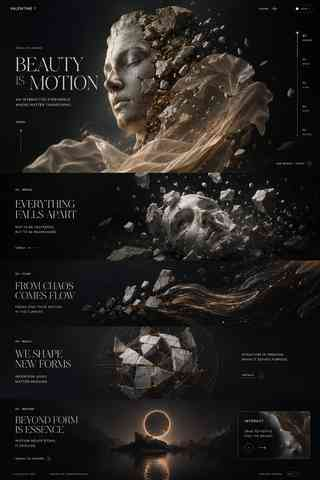

Không HUD. Không card. Không neon-tech. Art direction phải đứng được ngay cả khi motion bằng 0.
Bản này đảo pipeline: hero visual được thiết kế trước, typography và khoảng thở đi theo visual, sau đó mới thêm chuyển động rất nhẹ. Mục tiêu là kiểm tra chất lượng thiết kế chứ không khoe engine.
Nếu direction này đủ mạnh, bước kế tiếp mới là tách tượng, mảnh vỡ, vải và ánh sáng thành layer riêng để scroll tạo transformation thật.